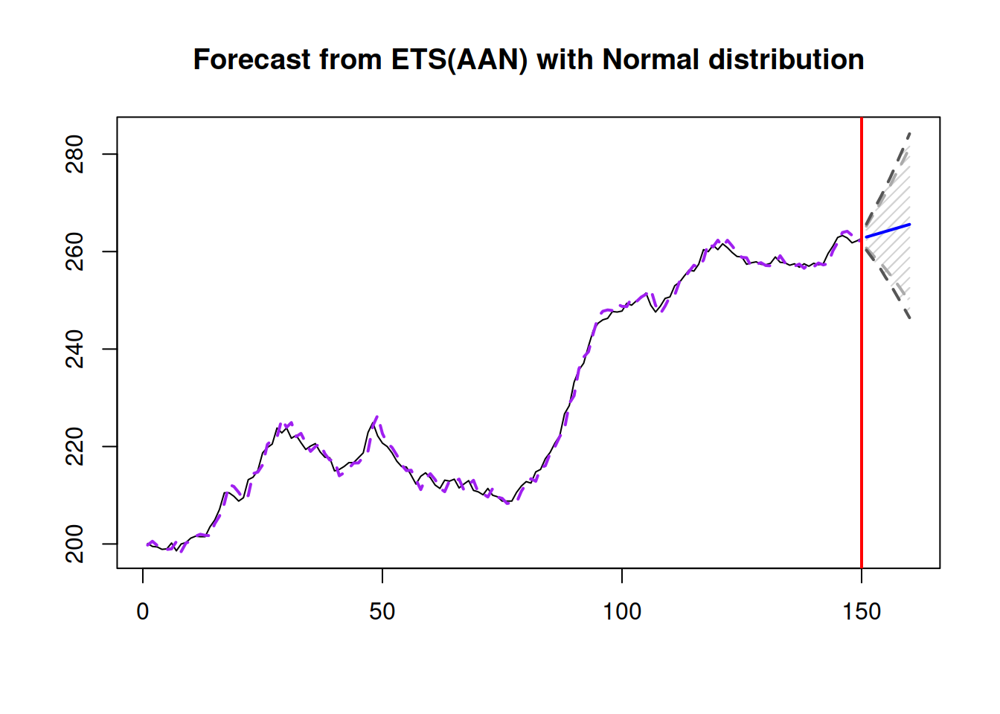

2.6 Correlation and measures of association
Now that we have discussed confidence intervals and hypothesis testing, we can move towards the analysis of relations between variables, in a way continuing the preliminary data analysis that we finished in Section 2.1. We continue using the same dataset mtcarsData with the two categorical variables, am and vs.
2.6.1 Nominal scale
As discussed in Section 1.2, not all scales support the more advanced operations (such as taking mean in ordinal scale). This means that if we want to analyse relations between variables, we need to use appropriate instrument. The coefficients that show relations between variables are called “measures of association.” We start their discussions with the simplest scale - nominal.
There are several measures of association for the variables in nominal scale. They are all based on calculating the number of specific values of variables, but use different formulae. The first one is called contingency coefficient \(\phi\) and can only be calculated between variables that have only two values. As the name says, this measure is based on the contingency table. Here is an example:
table(mtcarsData$vs,mtcarsData$am)##
## automatic manual
## V-shaped 12 6
## Straight 7 7The \(\phi\) coefficient is calculated as: \[\begin{equation} \phi = \frac{n_{1,1} n_{2,2} - n_{1,2} n_{2,1}}{\sqrt{n_{1,\cdot}\times n_{2,\cdot}\times n_{\cdot,1}\times n_{\cdot,2}}} , \tag{2.7} \end{equation}\] where \(n_{i,j}\) is the element of the table on row \(i\) and column \(j\), \(n_{i,\cdot}=\sum_{j}n_{i,j}\) - is the sum in row \(i\) and \(n_{\cdot,j}=\sum_{i} n_{i,j}\) - is the sum in column \(j\). This coefficient lies between -1 and 1 and has a simple interpretation: if will be close to 1, when the elements on diagonal are greater than the off-diagonal ones, implying that there is a relation between variables. The value of -1 can only be obtained, when off-diagonal elements are non-zero, while the diagonal ones are zero. Finally, if the values in the contingency table are distributed evenly, the coefficient will be equal to zero. In our case the value of \(\phi\) is:
(12*7 - 6*7)/sqrt(19*13*14*18)## [1] 0.1683451This is a very low value, so even if the two variables are related, the relation is not well pronounced. In order to see, whether this value is statistically significantly different from zero, we could test a statistical hypothesis (hypothesis testing was discussed in Section 2.5):
\(H_0\): there is no relation between variables
\(H_1\): there is some relation between variables
This can be done using \(\chi^2\) test, the statistics for which is calculated via: \[\begin{equation} \chi^2 = \sum_{i,j} \frac{n \times n_{i,j} - n_{i,\cdot} \times n_{\cdot,j}}{n \times n_{i,\cdot} \times n_{\cdot,j}} , \tag{2.8} \end{equation}\] where \(n\) is the sum of elements in the contingency table. The value calculated based on (2.8) will follow \(\chi^2\) distribution with \((r-1)(c-1)\) degrees of freedom, where \(r\) is the number of rows and \(c\) is the number of columns in contingency table. This is a proper statistical test, so it should be treated as one. We select my favourite significance level, 1% and can now conduct the test:
chisq.test(table(mtcarsData$vs,mtcarsData$am))##
## Pearson's Chi-squared test with Yates' continuity correction
##
## data: table(mtcarsData$vs, mtcarsData$am)
## X-squared = 0.34754, df = 1, p-value = 0.5555Given that p-value is greater than 1%, we fail to reject the null hypothesis and can conclude that the relation does not seem to be different from zero - we do not find a relation between the variables in our data.
The main limitation of the coefficient \(\phi\) is that it only works for the \(2\times 2\) tables. In reality we can have variables in nominal scale that take several values and it might be useful to know relations between them. For example, we can have a variable colour, which takes values red, green and blue and we would want to know if it is related to the transmission type. We do not have this variable in the data, so just for this example, we will create one (using multinomial distribution):
colour <- c(1:3) %*% rmultinom(nrow(mtcars), 1,
c(0.4,0.5,0.6))
colour <- factor(colour, levels=c(1:3),
labels=c("red","green","blue"))
barplot(table(colour), xlab="Colour")In order to measure relation between the new variable and the am, we can use Cramer’s V coefficient, which relies on the formula of \(\chi^2\) test (2.8):
\[\begin{equation}
V = \sqrt{\frac{\chi^2}{n\times \min(r-1, c-1)}} .
\tag{2.9}
\end{equation}\]
Cramer’s V always lies between 0 and 1, becoming close to one only if there is some relation between the two categorical variables. greybox package implements this coefficient in cramer() function:
cramer(mtcarsData$am,colour)## Cramer's V: 0.1003
## Chi^2 statistics = 0.3222, df: 2, p-value: 0.8512The output above shows that the value of the coefficient is approximately 0.1, which is low, implying that the relation between the two variables is very weak. In addition, the p-value tells us that we fail to reject the null hypothesis on 1% level in the \(\chi^2\) test (2.8), and the relation does not look statistically significant. So we can conclude that according to our data, the two variables are not related (no wonder, we have generated one of them).
The main limitation of Cramer’s V is that it is difficult to interpret beyond “there is a relation.” Imagine a situation, where the colour would be related to the variable “class” of a car, that can take 5 values. What could we say more than to state the fact that the two are related? After all, in that case you end up with a contingency table of \(3\times 5\), and it might not be possible to say how specifically one variable changes with the change of another one. Still, Cramer’s V at least provides some information about the relation of two categorical variables.
2.6.2 Ordinal scale
As discussed in Section 1.2, ordinal scale has more flexibility than the nominal one - its values have natural ordering, which can be used, when we want to measure relations between several variables in ordinal scale. Yes, we can use Cramer’s V and \(\chi^2\) test, but this way we would not be using all advantages of the scale. So, what can we use in this case? There are three popular measures of association for variables in ordinal scale:
- Goodman-Kruskal’s \(\gamma\),
- Yule’s Q,
- Kendall’s \(\tau\).
Given that the ordinal scale does not have distances, the only thing we can do is to compare values of variables between different observations and say, whether one is greater than, less than or equal to another. What can be done with two variables in ordinal scale is the comparison of the values of those variables for a couple respondents. Based on that the pairs of the observations can be called:
- Concordant if both \(x_1 < x_2\) and \(y_1 < y_2\) or \(x_1 > x_2\) and \(y_1 > y_2\) - implying that there is an agreement in order between the two variables (e.g. with a switch from a younger age group to the older one, the size of the T-shirt will switch from S to M);
- Discordant if for \(x_1 < x_2\) and \(y_1 > y_2\) or for \(x_1 > x_2\) and \(y_1 < y_2\) - implying that there is a disagreement in the order of the two variables (e.g. with a switch from a younger age group to the older one, the satisfaction from drinking Coca-Cola will switch to the lower level);
- Ties if both \(x_1 = x_2\) and \(y_1 = y_2\);
- Neither otherwise (e.g. when \(x_1 = x_2\) and \(y_1 < y_2\)).
All the measures of association for the variables in ordinal scale rely on the number of concordant, discordant variables and number of ties. All of these measures lie in the region of [-1, 1].
Goodman-Kruskal’s \(\gamma\) is calculated using the following formula: \[\begin{equation} \gamma = \frac{n_c - n_d}{n_c + n_d}, \tag{2.10} \end{equation}\] where \(n_c\) is the number of concordant pairs, \(n_d\) is the number of discordant pairs. This is a very simple measure of association, but it only works with scales of the same size (e.g. 5 options in one variable and 5 options in the other one) and ignores the ties.
In order to demonstrate this measure in action, we will create two artificial variables in ordinal scale:
- Age of a person: young, adult and elderly;
- Size of t-shirt they wear: S, M or L.
Here how we can do that in R:
age <- c(1:3) %*% rmultinom(nrow(mtcars), 1,
c(0.4,0.5,0.6))
age <- factor(age, levels=c(1:3),
labels=c("young","adult","elderly"))
size <- c(1:3) %*% rmultinom(nrow(mtcars), 1,
c(0.3,0.5,0.7))
size <- factor(size, levels=c(1:3),
labels=c("S","M","L"))And here is how the relation between these two artificial variables looks:
tableplot(age,size,xlab="Age",ylab="T-shirt size")Figure 2.28: Heat map for age of a respondent and the size of their t-shirt.
The graphical analysis based on Figure 2.28 does not provide a clear information about the relation between the two variables. But this is where the Goodman-Kruskal’s \(\gamma\) becomes useful. We will use GoodmanKruskalGamma() function from DescTools package for R for this:
DescTools::GoodmanKruskalGamma(age,size,conf.level=0.95)## gamma lwr.ci upr.ci
## -0.03846154 -0.51302449 0.43610141This function returns three values: the \(\gamma\), which is close to zero in our case, implying that there is no relation between the variables, lower and upper bounds of the 95% confidence interval. Note that the interval shows us how big the uncertainty about the parameter is: the true value in the population can be anywhere between -0.51 and 0.44. But based on all these values we can conclude that we do not see any relation between the variables in our sample.
The next measure is called Yule’s Q and is considered as a special case of Goodman-Kruskal’s \(\gamma\) for the variables that only have 2 options. It is calculated based on the resulting contingency \(2\times 2\) table and has some similarities with the contingency coefficient \(\phi\): \[\begin{equation} \mathrm{Q} = \frac{n_{1,1} n_{2,2} - n_{1,2} n_{2,1}}{n_{1,1} n_{2,2} + n_{1,2} n_{2,1}} . \tag{2.11} \end{equation}\] The main difference from the contingency coefficient is that it assumes that the data has ordering, it implicitly relies on the number of concordant (on the diagonal) and discordant (on the off diagonal) pairs. In our case we could calculate it if we had two simplified variables based on age and size (in real life we would need to recode them to “young,” “older” and “S,” “Bigger than S” respectively):
table(age,size)[1:2,1:2]## size
## age S M
## young 2 4
## adult 2 2(2*2-4*2)/(2*2+4*2)## [1] -0.3333333In our toy example, the measure shows that there is a weak negative relation between the trimmed age and size variables. We do not make any conclusions based on this, because this is not meaningful and is shown here just for purposes of demonstration.
Finally, there is Kendall’s \(\tau\). In fact, there are three different coefficients, which have the same name, so in the literature they are known as \(\tau_a\), \(\tau_b\) and \(\tau_c\).
\(\tau_a\) coefficient is calculated using the formula: \[\begin{equation} \tau_a = \frac{n_c - n_d}{\frac{T (T-1)}{2}}, \tag{2.12} \end{equation}\] where \(T\) is the number of observations, and thus in the denominator, we have the number of all the pairs in the data. In theory this coefficient should lie between -1 and 1, but it does not solve the problem with ties, so typically it will not reach the boundary values and will say that the relation is weaker than it really is. Similar to Goodman-Kruskal’s \(\gamma\), it can only be applied to the variables that have the same number of levels (same sizes of scales). In order to resolve some of these issues, \(\tau_b\) was developed: \[\begin{equation} \tau_b = \frac{n_c - n_d}{\sqrt{\left(\frac{T (T-1)}{2} - n_x\right)\left(\frac{T (T-1)}{2} - n_y\right)}}, \tag{2.13} \end{equation}\] where \(n_x\) and \(n_y\) are the number of ties calculated for both variables. This coefficient resolves the problem with ties and can now reach the boundary values in practice. However, this coefficient does not resolve the issue with different scale sizes. And in order to address this problem, we have \(\tau_c\) (Stuart-Kendall’s \(\tau_c\)): \[\begin{equation} \tau_c = \frac{n_c - n_d}{\frac{n^2}{2}\frac{\min(r, c)-1}{\min(r, c)}}, \tag{2.13} \end{equation}\] where \(r\) is the number of rows and \(c\) is the number of columns. This coefficient works for variables with different lengths of scales (e.g. age with 5 options and t-shirt size with 7 options). But now we are back to the problem with the ties…
In R, the cor() function implements Kendall’s \(\tau_a\) and \(\tau_b\) (the function will select automatically based on the presence of ties). There are also functions KendallTauA(), KendallTauB() and StuartTauC() in DescTools package that implement the three respective measures of association. The main limitation of cor() function is that it only works with numerical variables, so we would need to transform variables before applying the function. The functions from DescTools package, on the other hand, work with factors. Here are the values of the three coefficients for our case:
DescTools::KendallTauA(age,size,conf.level=0.95)## tau_a lwr.ci upr.ci
## -0.01612903 -0.15347726 0.12121920DescTools::KendallTauB(age,size,conf.level=0.95)## tau_b lwr.ci upr.ci
## -0.02469136 -0.32938991 0.28000720DescTools::StuartTauC(age,size,conf.level=0.95)## tauc lwr.ci upr.ci
## -0.0234375 -0.3126014 0.2657264Given that both variables have the same scale sizes, we should use either \(\tau_a\) or \(\tau_b\) for the analysis. However, we do not know if there are any ties in the data, so the safer option would be to use \(\tau_b\) coefficient. The value of the coefficient and its confidence interval tell us that there is no obvious association between the two variables in our sample. This is expected, because the two variables were generated independently of each other.
2.6.3 Numerical scale
Finally we come to the discussion of relations between variables measured in numerical scales. The most famous measure in this category is the Pearson’s correlation coefficient, which population value is: \[\begin{equation} \rho_{x,y} = \frac{\sigma_{x,y}}{\sigma_x \sigma_y}, \tag{2.14} \end{equation}\] where \(\sigma_{x,y}\) is the covariance between variables \(x\) and \(y\), while \(\sigma_x\) and \(\sigma_y\) are standard deviations of these variables. Typically, we do not know the population values, so this coefficient can be estimated in sample via: \[\begin{equation} r_{x,y} = \frac{\mathrm{cov}(x,y)}{\sqrt{V(x)V(y)}}, \tag{2.15} \end{equation}\] where all the values from (2.14) are substituted by their in-sample estimates. This coefficient measures the strength of linear relation between variables and lies between -1 and 1, where the boundary values correspond to perfect linear relation and 0 implies that there is no linear relation between the variables. In some textbooks the authors claim that this coefficient relies on Normal distribution of variables, but nothing in the formula assumes that. It was originally derived based on the simple linear regression (see Section 3.1) and its rough idea is to get information about the angle of the straight line drawn on the scatterplot. It might be easier to explain this on an example:
plot(mtcarsData$disp,mtcarsData$mpg,
xlab="Displacement",ylab="Mileage")
abline(lm(mpg~disp,mtcarsData),col="red")
Figure 2.29: Scatterplot for dispalcement vs mileage variables in mtcars dataset
Figure 2.29 shows the scatterplot between the two variables and also has the straight line, going through the cloud of points. The closer the points are to the line, the stronger the linear relation between the two variables is. The line corresponds to the formula \(\hat{y}=a_0+a_1 x\), where \(x\) is the displacement and \(\hat{y}\) is the line value for the Mileage. The same relation can be presented if we swap the axes and draw the line \(\hat{x}=b_0+b_1 y\):
plot(mtcarsData$mpg,mtcarsData$disp,
xlab="Displacement",ylab="Mileage")
abline(lm(disp~mpg,mtcarsData),col="red")Figure 2.30: Scatterplot for mileage vs dispalcement
The slopes for the two lines will in general differ, and will only coincide if the two variables have functional relations (all the point lie on the line). Based on this property, the correlation coefficient was originally constructed, as a geometric mean of the two parameters of slopes: \(r_{x,y}=\sqrt{a_1 b_1}\). We will come back to this specific formula later in Section 3.1. But this idea provides an explanation why the correlation coefficient measures the strength of linear relation. For the two variables of interest it will be:
cor(mtcarsData$mpg,mtcarsData$disp)## [1] -0.8475514Which shows strong negative linear relation between the displacement and mileage. This makes sense, because in general the cars with bigger engines will have bigger consumption and thus will make less miles per gallon of fuel. The more detailed information about the correlation is provided by the cor.test() function:
cor.test(mtcarsData$mpg,mtcarsData$disp)##
## Pearson's product-moment correlation
##
## data: mtcarsData$mpg and mtcarsData$disp
## t = -8.7472, df = 30, p-value = 9.38e-10
## alternative hypothesis: true correlation is not equal to 0
## 95 percent confidence interval:
## -0.9233594 -0.7081376
## sample estimates:
## cor
## -0.8475514In addition to the value, we now have results of the hypothesis testing (where null hypothesis is \(\rho_{x,y}=0\)) and the confidence interval for the parameter. Given that the value of the parameter is close to its bound, we could conclude that the linear relation between the two variables is strong and statistically significant on 1% level.
Note that the value of correlation coefficient only depends on the distance of points from the straight line, it does not depend on the slope (excluding case, when slope is equal to zero and thus the coefficient is equal to zero as well). So the following two cases will have exactly the same correlation coefficients:
error <- rnorm(100,0,10)
x <- c(1:100)
y1 <- 10+0.5*x+0.5*error
y2 <- 2+1.5*x+1.5*error
# Produce the plots
par(mfcol=c(1,2))
plot(x,y1,ylim=c(0,200))
abline(lm(y1~x),col="red")
text(30,150,paste0("r=",round(cor(x,y1),5)))
plot(x,y2,ylim=c(0,200))
abline(lm(y2~x),col="red")
text(30,150,paste0("r=",round(cor(x,y2),5)))Figure 2.31: Example of relations with exactly the same correlations, but different slopes.
There are other examples of cases, when correlation coefficient would be misleading or not provide the necessary information. One of the canonical examples is the Anscombe’s quartet (Wikipedia, 2021a), which shows very different types of relations, for which the Pearson’s correlation coefficient would be exactly the same. An important lesson from this is to always do graphical analysis (see Section 2.1.2) of your data, when possible - this way misleading situations can be avoided.
Coming back to the scatterplot in Figure 2.29, it demonstrates some non-linearity in the relation between the two variables. So, it would make sense to have a different measure that could take it into account. This is where Spearman’s correlation coefficient becomes useful. It is calculated using exactly the same formula (2.15), but applied to the data in ranks. By using ranks, we loose information about the natural zero and distances between values of the variable, but at the same time we linearise possible non-linear relations. So, Spearman’s coefficient shows the strength of monotonic relation between the two variables:
cor.test(mtcarsData$mpg,mtcarsData$disp,
method="spearman")## Warning in cor.test.default(mtcarsData$mpg, mtcarsData$disp, method =
## "spearman"): Cannot compute exact p-value with ties##
## Spearman's rank correlation rho
##
## data: mtcarsData$mpg and mtcarsData$disp
## S = 10415, p-value = 6.37e-13
## alternative hypothesis: true rho is not equal to 0
## sample estimates:
## rho
## -0.9088824We can notice that the value of the Spearman’s coefficient in our case is higher than the value of the Pearson’s correlation, which implies that there is indeed non-linear relation between variables. The two variables have a strong monotonic relation, which makes sense for the reasons discussed earlier. The non-linearity makes sense as well because the car with super powerful engines would still be able to do several miles on a gallon of fuel, no matter what. The relation will never be zero or even negative.
Note that while Spearman’s correlation will tell you something about monotonic relations, it will fail to capture all other non-linear relations between variables. For example, in the following case the true relation is trigonometric:
x <- c(1:100)
y <- sin(x)
plot(x,y,type="l")
But neither Pearson’s nor Spearman’s coefficients will be able to capture it:
cor(x,y)## [1] -0.04806497cor(x,y,method="spearman")## [1] -0.04649265In order to correctly diagnose such non-linear relation, either one or both variables need to be transformed to linearise the relation. In our case this implies measuring the relation between \(y\) and \(\sin(x)\) instead of \(y\) and \(x\):
cor(sin(x),y)## [1] 12.6.4 Mixed scales
Finally, when we have two variables measured in different scales, the general recommendation is to use the measure of association for the lower scale. For example, if we have the nominal variable colour and the ordinal variable size (both related to T-shirts people prefer), we should use Cramer’s V in order to measure the relation between them:
cramer(colour,size)## Cramer's V: 0.2991
## Chi^2 statistics = 5.7241, df: 4, p-value: 0.2207Similarly, if we have a numerical and ordinal variables, we should use one of the measures for ordinal scales.
However, in some cases we might be able to use a different measure of association. One of those is called multiple correlation coefficient and can be calculated for variables in numerical vs categorical scales. This coefficient can be calculated using different principles, the simplest of which is constructing a regression model (discussed later in Section 3.2) of numerical variable from the dummy variables (see Section 3.4) created from the categorical one and then extracting the square root of coefficient of determination (discussed in Section 3.2.2). The resulting coefficient lies between 0 and 1, where 1 implies perfect linear relation between the two variables and 0 implies no linear relation between them. mcor() function from greybox implements this:
mcor(mtcars$am, mtcars$mpg)## Multiple correlations value: 0.5998
## F-statistics = 16.8603, df: 1, df resid: 30, p-value: 3e-04Based on the value above, we can conclude that the type of transmission has a linear relation with the mileage. This aligns with what we have already discovered earlier, in preliminary analysis section (Section 2.1.2) in Figure 2.14.